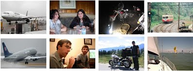
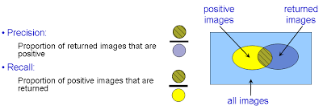

This is an Oxford Visual Geometry Group computer vision practical, authored by Andrea Vedaldi and Andrew Zisserman (Release 2016a).

This practical is on image classification, where an image is classified according to its visual content. For example, does it contain an airplane or not. Important applications are image retrieval - searching through an image dataset to obtain (or retrieve) those images with particular visual content, and image annotation - adding tags to images if they contain particular object categories.
The goal of this session is to get basic practical experience with classification. It includes: (i) training a visual classifier for five different image classes (airplanes, motorbikes, people, horses and cars); (ii) assessing the performance of the classifier by computing a precision-recall curve; (iii) training set and testing set augmentation; and (iv) obtaining training data for new classifiers using Bing image search and using the classifiers to retrieve images from a dataset.
Read and understand the requirements and installation instructions. The download links for this practical are:
After the installation is complete, open and edit the script exercise1.m in the MATLAB editor. The script contains commented code and a description for all steps of this exercise, relative to Part I of this document. You can cut and paste this code into the MATLAB window to run it, and will need to modify it as you go through the session. Other files such as exercise2.m, contain the code for other parts of the practical, as indicated below.
Note: the student packages contain only the code required to run the practical. The complete package, including code to preprocess the data, is available on GitHub.
The data provided in the directory data consists of images and pre-computed descriptors for each image. The JPEG images are contained in data/images. The data consists of three image classes (containing airplanes, motorbikes or persons) and`background' images (i.e. images that do not contain these three classes). In the data preparation stage, this data is divided as:
| -- | aeroplane | motorbike | person | background |
|---|---|---|---|---|
| train | 112 | 120 | 1025 | 1019 |
| test | 126 | 125 | 983 | 1077 |
| total | 238 | 245 | 2008 | 2096 |
An image is represented by a single vector descriptor. Mapping the visual content of an image to a single descriptor vector is often regarded as an encoding step, and the resulting descriptor is sometimes called a code. The main benefit of working with fixed length vectors is that they can be compared by simple vectorial metrics such as Euclidean distance. For the same reason, they are a natural representation to use in learning an image classifier.
We will use a Convolutional Neural Network (CNN) encoding. The process of constructing the CNN descriptor starting from an image is summarized next:
First, the network is pre-trained on the ImageNet dataset to classify an image into one of a thousand categories. This determines all the parameters of the CNN, such as the weights of the convolutional filters. Then, for a new image, the trained network is used to generate a descriptor vector from the response of a layer in the architecture with this image as input. For this practical we will use the VGG-M-128 network, which produces a 128 dimensional descriptor vector at the last fully-connected layer before classification, called fc7. We also consider computationally cheaper but weaker features extracted from the convolutional layers. In particular, we consider the following encodings:
vggm128-conv3: the third convolutional layer output, containing 512 feature channels.vggm128-conv4: the fourth convolutional layer output, containing 512 feature channels.vggm128-conv5: the fifth convolutional layer output, also containing 512 feature channels.vggm128-fc7: the last fully-connected layer output, containing 128 feature channels.We will start by training a classifier for images that contain motorbikes. The files data/motorbike_train.txt and data/motorbike_val.txt list images that contain motorbikes.
Task: Look through example images of the motorbike class and the background images by browsing the image files in the data directory.
The motorbike training images will be used as the positives, and the background images as negatives. The classifier is a linear Support Vector Machine (SVM).
Task: Train the classifier by following the steps in
exercise1.m.
We will first assess qualitatively how well the classifier works by using it to rank all the training images.
Question: What do you expect to happen?
Task: View the ranked list using the provided function
displayRankedImageListas shown inexcercise1.m.
Now apply the learnt classifier to the test images. Again, you can look at the qualitative performance by using the classifier score to rank all the test images. Note the bias term is not needed for this ranking, only the classification vector w.
Question: Why is the bias term not needed?
Now we will measure the retrieval performance quantitatively by computing a Precision-Recall curve. Recall the definitions of precision and recall:

The precision-recall (PR) curve is computed by varying the threshold on the classifier (from high to low) and plotting the values of precision against recall for each threshold value. In order to assess the retrieval performance by a single number (rather than a curve), the Average Precision (AP, the area under the curve) is often computed. Make sure you understand how the precision values in the Precision-Recall curve correspond to the ranking of the positives and negatives in the retrieved results.
Up to this point the descriptor vector has been computed from the image as is. We now consider representing each image multiple times by generating a descriptor for both the original image and for the image after `flipping' (a mirror reflectance about a vertical axis). This data augmentation will be used in a different manner at training and test time. In training, the descriptors from the flipped images will be used as additional training samples (i.e. each original image generates two data samples for training). In testing, the descriptors for the original and flipped image will be averaged resulting in, again, a single vector representing the test image.
Edit exercise1.m to include the training and test augmentation as specified above. Note, the change in classification performance if: (i) only training data augmentation is used, (ii) only testing data augmentation is used; and (iii) both training and test data are augmented.
Questions:
- Is classifying the average vector for the test image the same as classifying each vector independently and then averaging the classifying score?
- When would you expect flipping augmentation to be detrimental to performance?
- How could additional descriptors be obtained from each image?
Note: when learning the SVM, to save training time we are not changing the $C$ parameter. This parameter influences the generalization error and should be relearnt on a validation set when the training setting is changed (see stage Stage 1.F). However, in this case the influence of $C$ is small as can be verified experimentally.
So far we have used only 20 (of the 120) positive images and 1019 negative images for training the classifier. Change the parameters numPos and numNeg to decrease and increase the number of training images, particularly for the positive images.
Questions:
- How much does the performance vary as
numPosis changed from 1 to+inf(indicating that all available positive images are used)?- Compare doubling the number of training images by either including fresh samples or generating new samples using augmentation. Which performs better? Why?
If there is a significant difference between the training and test performance, then that indicates over fitting. The difference can often be reduced, and the test performance (generalization), improved by changing the SVM C parameter.
Task: Edit
exercise1.mto vary the $C$ parameter in the range 0.1 to 1000 (the default is $C=10$), and plot the AP on the training and test data as $C$ varies.
Note: hyper-parameters and performance should actually be assessed on a validation set that is held out from the training set. They should not be assessed on the test set. In this practical we are not enforcing this good practice, but don't optimize on the test set once you move on from this practical and start to classify your own data.
Skip to Stage 1.H on fast track
Now repeat Stage B and C for each of the other two object categories: airplanes and people. To do this you can simply rerun exercise1.m after changing the dataset loaded at the beginning in stage (A). Remember to change both the training and test data. In each case record the AP performance measure.
Question: Does the AP performance match your expectations based on the variation of the class images?
An important practical aspect of image descriptors is their normalization. For example, if we regard the CNN descriptor as a discrete probability distribution it would seem natural that its elements should sum to 1. This is the same as normalizing the descriptor vectors in the L1 norm. However, in exercise1.m L2 normalization (sum of squares) is used instead.
Task: Modify
exercise1.mto use L1 normalization and no normalization and measure the performance change.
A linear SVM can be thought of as using a linear kernel to measure the similarity between pair of objects $h$ and $h'$ (in this case pairs of CNN descriptors).
Question: What can you say about the self-similarity,$K(\mathbf{h},\mathbf{h})$, of a descriptor $\mathbf{h}$ that is L2 normalized?
Compare $K(\mathbf{h},\mathbf{h})$ to the similarity, $K(\mathbf{h},\mathbf{h}')$,of two different L2 normalized descriptors $\mathbf{h}$ and $\mathbf{h}'$
Questions:
- Can you say the same for unnormalized or L1 normalized descriptors?
- Do you see a relation between the classification performance and L2 normalization?
A useful rule of thumb is that better performance is obtained if the vectors that are ultimately fed to a linear SVM (after any intermediate processing) are L2 normalized.
The CNN image features are very strong because they are pretrained on millions of images from the ImageNet data. So far, we have experimented with the vggm128-conv3 features. Try now to extract features from a different layer in the architecture and observe how the performance changes:
Tasks:
- Restore L2 normalization for the image representation (see the previous stage) and choose a category.
- Rerun classification using only 10 training images (set
numPos=10) by setting theencodingtovggm128-conv1,vggm128-conv2,vggm128-conv3,vggm128-conv4,vggm128-conv5andvggm128-fc7.- Note the resulting performance.
Question: How much does the choice of feature depth affect classification performance?
Now make the setup even more extreme by considering the so-called one-shot learning problem, i.e. learning an image classifier from a single training image. Thus, set numPos=1 and rerun the experiments.
Questions:
- Can you get good performance using a single training images and the deeper features?
- If so, how is it possible that the system can learn to recognize an object from a single example?
You can use the function displaySaliencyMap to visualize the areas of the image that the classifier thinks are most related to the class (see the example embedded in exercise1.m).
Use this function first to visualize the class saliency using vggm128-fc7 features for an image containing the object category.
Question: Do the areas correspond to the regions that you would expect to be selected?
Skip to Part 2 on fast track
Tasks:
- Visualize the class saliency using features from other layers:
vggm128-conv4,vggm128-conv3,vggm128-conv2,vggm128-conv1- Rerun the visualizations for an image not containing the object category.
In Part 1 of this practical the training data was provided and all the feature vectors pre-computed. The goal of this second part is to choose the training data yourself in order to optimize the classifier performance. The task is the following: you are given a large corpus of images and asked to retrieve images of a certain class, e.g. those containing a bicycle. You then need to obtain training images, e.g. using Bing Image Search, in order to train a classifier for images containing bicycles and optimize its retrieval performance.
The MATLAB code exercise2.m provides the following functionality: it uses the images in the directory data/myImages and the default negative list data/background_train.txt to train a classifier and rank the test images. To get started, we will train a classifier for horses:
Use Bing image search with ''horses'' as the text query (you can also set the photo option on)
Pick 5 images and drag and drop (save) them into the directory data/myImages. These will provide the positive training examples.
Tasks:
- Run the code
exercise2.mand view the ranked list of images. Note, since feature vectors must be computed for all the training images, this may take a few moments.- Now, add in 5 more images and retrain the classifier.
The test data set contains 148 images with horses. Your goal is to train a classifier that can retrieve as many of these as possible in a high ranked position. You can measure your success by how many appear in the first 36 images (this performance measure is `precision at rank-36'). Here are some ways to improve the classifier:
Tasks:
- Add more positive training images.
- Add more positive training images, but choose these to be varied from those you already have.
Note: all images are automatically normalized to a standard size, and descriptors are saved for each new image added in the data/cache directory. The test data also contains the category car. Train classifiers for it and compare the difficulty of this and the horse class.